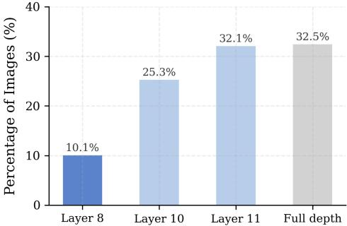

Figureure 1 · : Layer-wise noise dynamics in INT8 ViT-B/32 CLIPFigure 1: Layer-wise noise dynamics in INT8 ViT-B/32 CLIP. The noise-to-signal ratio remains low in early layers and rises sharply after Layer 8, reaching 52% at Layer 11. This transition motivates Layer 8 as the earliest reliable exit point, beyond which quantization noise begins to dominate the semantic signal.这张图来自论文 PDF 的结构化抽取。当前用于辅助理解 The Rescue Effect 的方法或实验，请结合正文精读段落一起看。

(b)Exit Distribution (Optimized) Figure 2: (a) FLOPs–accuracy Pareto frontier of LRA-EE ac(b)Exit Distribution (Optimized) Figure 2: (a) FLOPs–accuracy Pareto frontier of LRA-EE across configurations. Unlike conventional EE, the frontier ascends in both axes simultaneously. (b) Per-layer exit distribution of the optimized LRA-EE configuration. Layer 8 accommodates 10.1% of samples, with the majority routed through Layers 10–11 and full-depth inference.这张图/表用于判断 The Rescue Effect 的实验收益来自哪里。重点看替换、消融或跨模型设置下趋势是否一致，而不是只看单个最高分。